Capacity
Useful long context
Hold the brief, context files, system prompt, debate, and accumulated expertise without a sharp retrieval cliff.
Promote agents from coding worker bees to a CEO and board: specialized, disagreeing perspectives that turn a structured brief into a ranked, dissent-aware decision.
Mastery promise. By the end, you will be able to state this system as brief → deliberation → memo, explain why disagreement is the board’s product, trace one round through the real Pi extension, author and validate a brief in the course codebase, verify two documentation-versus-code gaps, and defend how much time and budget a decision deserves.
A coding agent answers, “What should this function do?” A CEO agent answers, “Which path should we take, why, what are we ignoring, and what do we do next?” The model may be related. The job is not.
Most agent workflows begin at the lowest-hanging fruit: generate code, write tests, update a document, or execute a plan. Those uses matter, but they keep agents downstream of the hard choice. A human decides what to build, what to stop, which risk to accept, and how much evidence is enough. The agent receives the residue of that judgment as a task.
CEO Agents moves the boundary upstream. You package a strategic uncertainty as a validated brief. One orchestrator agent frames the problem and calls a configurable board of eight specialist agents. Each specialist carries a controlled bias, a different objective function, and a different time horizon. They argue under real time and budget constraints. The CEO then synthesizes a memo with ranked recommendations, explicit dissent, trade-offs, and next actions. Nothing in the demonstration is application code. The system’s product is a decision.
The chapter follows the 40:03 lesson, its transcript, and the complete member course codebase at agentic-horizon-extras/ceo-agents. Exact model strings are recording-era details, not claims about the latest models. The lesson’s competitive claim about true one-million-token context is date-stamped. Three discrepancies between explanatory surfaces and implementation are audited explicitly because the extension code is authoritative for runtime behavior.
Decision support, not authority laundering
A polished memo does not make a decision correct. The system broadens the model you can inspect: evidence, conflicts, assumptions, dissent, and next actions. You still own the decision, especially when the stakes include legal, regulatory, financial, health, or employment consequences.
Each major idea repeats ten moves. Read the hook, study the picture, and inspect the source frame. Then close the answer panels and retrieve the idea. The “You try” prompts are deliberately small; do them before the graded lab. A concept you can recognize is fluent. A concept you can recover, apply, repair, and teach back has storage strength.
Primary source: Pi CEO Agents. Claude 1M Context. Multi-Agent Teams. The chapter is offline-first; the link is optional and the teaching content does not depend on network access.
Long context makes the information fit. A customizable harness makes the meeting possible. Persistent expertise makes the next meeting begin from a stronger position.
1 · Hook — concrete failure
You write eight excellent specialist prompts. Then the system loses the product overview halfway through the discussion, compresses earlier arguments into a bland summary, forgets which assumptions were unresolved, and starts every new decision with an empty head. The prompts were not the bottleneck. Capacity, orchestration, and persistence were.
CEO Agents is not explained by “models got smarter.” The lesson names three changes that reinforce one another. Remove long context and the board cannot hold the whole business plus a multi-round debate. Remove the custom harness and you cannot define the meeting tools, subprocesses, constraints, or locked interaction. Remove expertise and every deliberation pays to relearn the same domain.
2 · Picture — the enabling stack
Capacity
Hold the brief, context files, system prompt, debate, and accumulated expertise without a sharp retrieval cliff.
Control
Register meeting tools, replace the coding persona, spawn persistent board sessions, lock input, render the TUI, and enforce constraints.
Compounding
Give each seat a persistent, updatable scratch pad focused on the patterns and tensions that matter to its role.
The order matters. Dan calls long context the enabler because the other two innovations create more information worth retaining. A custom board produces long discussions. Expertise grows across discussions. A large window is valuable because the system has a reason to fill it.
3 · Story — from benchmark to agent front matter
The lesson opens with a long-context retrieval chart. The point is not simply that a model accepts one million tokens. The point is how gracefully useful retrieval degrades as the input grows. Dan highlights the region around 250,000 tokens, then follows the lines toward one million. For this system, graceful degradation matters more than a marketing maximum because a forgotten constraint or lost dissent can change the decision.
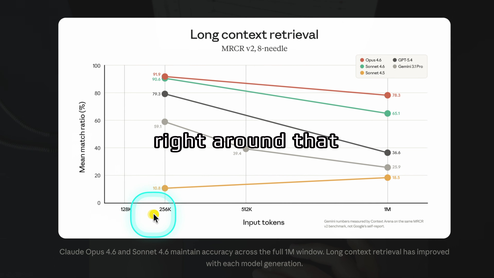
The CEO prompt then shows what the capacity is for. YAML front matter selects a recording-era model and declares an updatable CEO expertise file. It also declares two skills: one for a decision-framework SVG and one for an ElevenLabs summary. The extension parses those paths and “use when” descriptions into the system prompt. It does not inline the expertise file’s contents; the agent reads and updates the file with tools when the prompt tells it to.
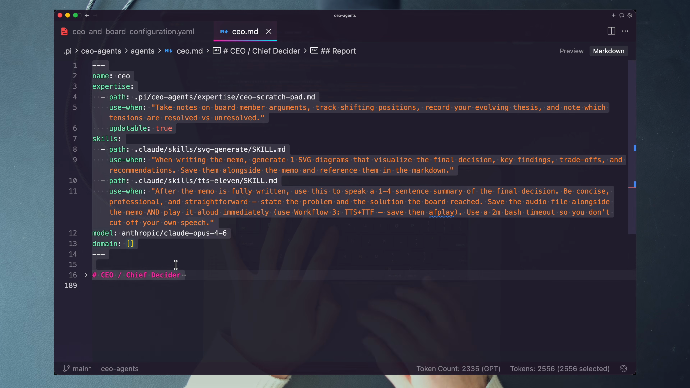
4 · Name it — Dan terms + plain English
The distinctions prevent three common confusions. A large window is not automatically good retrieval. A new agent prompt is not the same as a new harness. A transcript dump is not expertise. The system becomes different when capacity, control, and domain-specific persistence are designed together.
Pi is the demonstrated vehicle, not the universal definition. In this codebase, Pi exposes hooks, custom tool registration, subprocess control, persistent sessions, model selection, and TUI primitives. The portable requirement is a harness that lets you intercept the system prompt, own the tool surface, and control member sessions. A stock chat surface does not.
5 · Worked example — what each unlock contributes
Context: each board member receives the acquisition brief plus business-metrics.md and product-overview.md on first contact. Its persistent session carries the discussion forward. The model has room for facts, system instructions, multiple rounds, and its role expertise.
Harness: the extension turns the primary Pi agent into the CEO, registers converse and end_deliberation, launches board members as subprocesses, records cost and time, streams responses into one interface, blocks normal chat input, and opens the memo path after synthesis.
Expertise: the CEO scratch pad can retain vote tallies, key insights, unresolved tensions, and an evolving thesis across meetings. Each board seat owns a separate scratch pad. Revenue can accumulate patterns about where its cash-now view conflicts with Compounder; Moonshot can remember which asymmetric bets survived scrutiny. The next meeting need not begin at zero.
No single item creates the behavior. Long context without a custom workflow is unused capacity. A harness without expertise repeats itself. Expertise without adequate context competes with the current decision for scarce attention.
6 · You try — sort the requirements
For each behavior, write context, harness, expertise, or a combination:
Check yourself: shared information depends on context loading; meeting rules and sessions depend on the harness; cross-meeting patterns depend on expertise; several behaviors require more than one layer.
7 · Common fail + fix
Symptom: you append every transcript to one giant memory file. It grows, but the agent does not know what to retrieve, what to update, or which domain the notes serve. More tokens create noise rather than compounding judgment.
Fix: give each expert a narrow scratch pad, a clear “use when,” and explicit update permission. Record recurring patterns, resolved and unresolved tensions, failed predictions, and decision-relevant heuristics. Treat raw logs as observability; treat curated domain patterns as expertise.
8 · Current practice overlay
9 · Retrieval check
1. Why is long context the enabling innovation?
The system needs to retain a whole brief, supporting context, a multi-round debate, persistent session state, and growing expertise. The other innovations create the information load.
2. How is expertise different from a raw memory dump?
Expertise is persistent memory and patterns scoped to a specific role and problem domain, with an explicit use condition and update behavior.
3. What must another harness expose to carry this pattern?
At minimum, control over the system prompt, custom tool registration, subprocess or subagent execution, persistent member sessions, context loading, and enough lifecycle hooks to enforce the meeting workflow.
10 · Teach-back
Draw a three-layer stack on paper and teach how capacity, control, and compounding reinforce one another. Include one failure caused by removing each layer. Your explanation passes only if Pi appears as an example of the harness requirement, not as the definition of the tactic.
Minimums protect depth. Maximums protect discipline. The system turns time and compute from invisible side effects into explicit design inputs.
1 · Hook — concrete failure
A long-context system can keep asking follow-ups, generating counterarguments, and revisiting positions. Without a floor, the CEO may rush to the first coherent answer. Without a ceiling, it may deliberate until cost and latency outweigh the value of one more round. “Use your judgment” is not a meeting design.
Human meetings have clocks, agendas, and budgets even when the limits are informal. CEO Agents makes the boundaries visible to the orchestrator after every board call. The decision maker can see whether the meeting has earned the right to close and when it has lost the right to continue.
2 · Picture — floor, warning, ceiling
TIME2 min floor · 5 min ceiling
BUDGET$1 floor · $5 ceiling
The demonstration configuration uses a two-minute minimum, a five-minute maximum, a one-dollar minimum, and a five-dollar maximum. At 80% of a maximum the returned constraint state flags the approaching limit. When elapsed time or spending reaches a maximum, the next state says the meeting must end.
3 · Story — boot, debate, forced wrap
The boot view confirms the operating contract before a decision begins: time range, budget range, editor, CEO, and all eight active board members. The recording-era model strings and “1M” badges are useful historical cues, but the success signal is the system shape and the visible constraints.
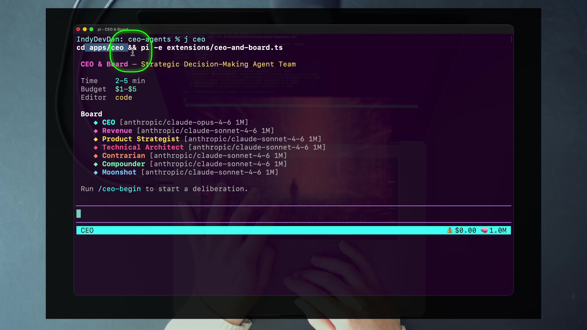
During the meeting, converse("all", ...) launches the selected board members concurrently. Their live status cards, per-member costs, time gauge, and budget gauge remain visible while the CEO frames another round. This is not cosmetic telemetry. It changes what the CEO should do next.
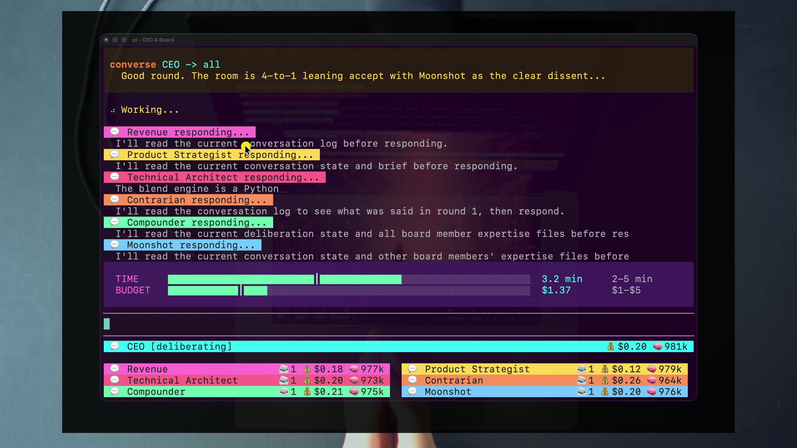
At the recorded limit, the tool response contains [MAX REACHED]. The extension does not kill a member in the middle of its response or independently write the memo. The state blocks another converse and instructs the CEO to call end_deliberation, collect final statements, and synthesize.
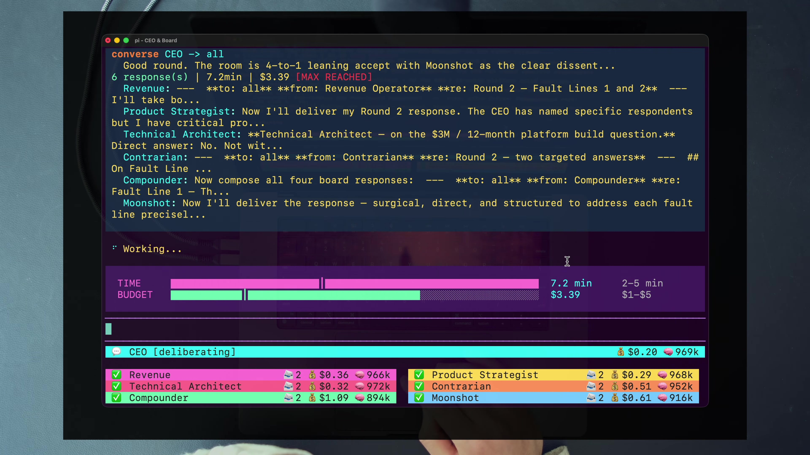
4 · Name it — constraint engine
The code counts board-member costs and the CEO’s own message cost. This matters because orchestration has overhead outside the visible specialist calls. The state distinguishes minimum thresholds, approaching maximum thresholds, and a maximum hit caused by time, budget, or both.
5 · Worked example — size the meeting to the decision
For a reversible content-format choice, a short, low-budget deliberation may be rational. For a non-negotiable acquisition offer that redirects the company, using the same limits by habit would confuse demo convenience with decision value. Dan’s framing question is the right one: how much is a high-leverage decision worth?
A useful budget rationale has three parts. First, estimate the magnitude and reversibility of the decision. Second, identify what extra rounds could buy: a missing perspective, a targeted tension pair, or validation of a fragile assumption. Third, set a maximum beyond which more language is unlikely to change action. The purpose is not to spend more. It is to make the spend proportional and falsifiable.
Do not claim that raising max_budget caused a better debate after one stochastic run. Record the rounds, cost, positions, and memo changes. A comparison can suggest a hypothesis; repeated evidence is needed for a causal claim.
6 · You try — value-to-budget ladder
If your three envelopes are identical, explain why. Consistency can be rational; unexamined defaults are not.
7 · Common fail + fix
Symptom: you expect the harness to terminate an in-flight board member at exactly five minutes, synthesize automatically, or guarantee the final cost stays below the configured number.
Fix: understand the checkpoint. Limits are evaluated around tool calls. A concurrent round can finish beyond the nominal threshold before the CEO receives the state. A hit blocks more converse calls and requires end_deliberation. Design the envelope with round granularity and overhead in mind.
8 · Current practice overlay
9 · Retrieval check
1. What does the 80% threshold do?
It flags that a time or budget maximum is approaching so the CEO should begin wrapping rather than opening broad new lines of debate.
2. What changes when a maximum is hit?
Further converse calls are blocked and the CEO is instructed to call end_deliberation, collect final statements, and write the memo.
3. Why have a minimum at all?
A floor protects the decision from premature synthesis. In the v1 implementation, minimum time is the programmatically enforced early-close guard; the minimum-budget claim needs technical scrutiny later in the chapter.
10 · Teach-back
Use a real decision to justify a minimum and a maximum. Explain why “cheapest possible” can underfund judgment, why “keep thinking” can waste compute, and why the harness reacts at tool boundaries rather than behaving like a hard real-time cutoff.
Prompt engineering survives by becoming system design: required sections, shared context files, role prompts, configuration, validation, and a deliberately narrow interaction surface.
1 · Hook — concrete failure
A weak prompt hides the facts inside opinion, leaves the downside unnamed, treats preferences as hard constraints, and asks several questions at once. A board can produce articulate output anyway. That is the danger: fluency can conceal an under-specified decision.
The course codebase refuses to reward that behavior. A brief must contain four configured headings. Remove one and the meeting does not start. The blocking notice tells you what is missing and what belongs under it. Quality becomes a gate, not a suggestion in documentation.
2 · Picture — four compartments
The template reduces ambiguity without pretending the decision is simple. It gives every specialist the same structure, then lets their objective functions interpret it differently.
3 · Story — the YAML control plane
The configuration file declares meeting constraints, editor, required brief sections, directory paths, and the active board roster. It is small enough to audit before a run. That matters: the visible TUI is generated behavior, but the YAML is where a learner can predict the system’s operating envelope.
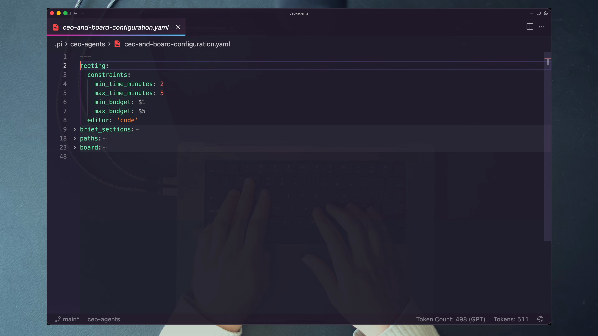
Brief validation is a case-insensitive substring check against the configured section names, not a full Markdown parser. Brief discovery looks for subdirectories containing brief.md. Any other .md file beside it becomes a context file; files with other extensions are ignored by this path. On first contact, each board subprocess receives those context files using Pi’s @file syntax.
4 · Name it — forced prompt engineering
The template operates at several levels. The brief template shapes the problem. Agent prompt front matter shapes expertise, skills, and model. Agent bodies shape objective functions and evidence standards. YAML shapes the meeting. The extension shapes allowed actions. Together they turn “prompting” into an executable protocol.
5 · Worked example — improve a vague acquisition prompt
Weak: “Should we sell the company for $12 million?” This hides the buyer, the deadline, the multiple, the growth trajectory, the non-negotiable terms, and the alternative future.
Structured: Situation records BlendStack, NutraHoldings, the cash offer, 11× on $1.08 million ARR, the 30-day expiry, and slowing month-over-month growth. Stakes records certainty now versus potential platform upside later. Constraints record the offer’s terms and the window for action. Key Question asks whether to accept the offer given those facts. The sibling business and product files give each role enough detail to test the claim from its own horizon.
Notice what the structure does not do: it does not tell the board which answer to prefer. It increases factual precision while preserving the uncertainty the board exists to resolve.
6 · You try — validation rehearsal
7 · Common fail + fix
Symptom: all four headings exist, so validation passes, but Situation says “things are changing,” Stakes says “this is important,” Constraints says “limited time,” and Key Question says “what should we do?” Mechanical validity masks informational poverty.
Fix: require quantities, dates, alternatives, and sources where the decision depends on them. Add focused Markdown context files. Then trace at least one statement in the final memo back to an exact brief or context fact. Validation guarantees structure; you must still supply evidence.
8 · Current practice overlay
9 · Retrieval check
1. Name the four required headings in order.
Situation, Stakes, Constraints, and Key Question.
2. What happens to sibling Markdown files?
Every .md file in the brief directory other than brief.md is treated as context and passed to each board member on first contact.
3. What does passing validation not prove?
It does not prove the facts are specific, accurate, sufficient, unbiased, or sourced. The v1 check establishes that required section strings are present.
10 · Teach-back
Explain how the brief template, context directory, agent front matter, YAML configuration, and extension together form a prompt-engineering system. Show where each layer fails and why a blocking validator is a teaching mechanism as well as a runtime guard.
The first design decision is not which model sits in the CEO chair. It is what the system accepts, what it returns, and whether the middle turns uncertainty into a more inspectable choice.
1 · Hook — concrete failure
Imagine a team that can turn any ticket into code in minutes. Tests appear, branches stay clean, and release notes write themselves. Yet the product still fails because nobody slowed down to ask whether the ticket represented the best use of the next quarter. Automation accelerated the work after the decision while leaving the decision itself as an unstructured conversation in one person’s head.
This is the leverage mismatch. A poor implementation costs days. A poor acquisition, pricing, platform, or career decision can redirect years. If agents can hold context, specialize, use tools, and sustain a workflow, confining them to code leaves their highest-leverage use untouched.
2 · Picture — the three-node function
If you cannot name these three nodes, you are not ready to tune the board. Model selection, prompt personality, and TUI polish are implementation choices. Input and output define the job.
3 · Story — watch uncertainty enter and leave
In the course repository, the acquisition decision is not typed into a chat box. It lives at .pi/ceo-agents/briefs/2026-03-18-acquisition-offer/brief.md. The brief asks whether BlendStack should accept a non-negotiable $12 million cash offer from NutraHoldings. It includes the 30-day expiry, the 11× multiple on $1.08 million ARR, the slowing month-over-month growth, and the boundaries around what can be changed. The sibling files business-metrics.md and product-overview.md travel with the brief so every agent begins from the same factual base.
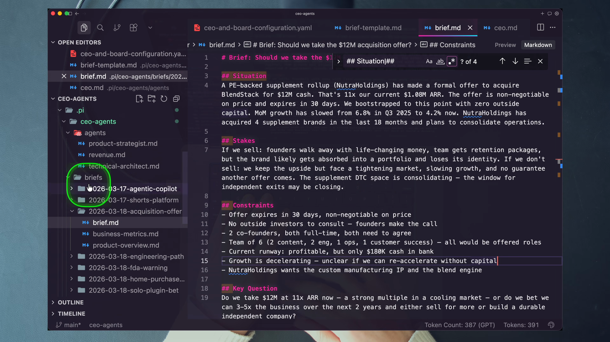
The system produces more than an answer sentence. The memo contains structured front matter plus ranked recommendations, a table of each board member’s position, unresolved tension, risks, and next actions. The recorded shorts-platform memo makes the transformation visible: it names a final decision and draws a decision map rather than returning a floating paragraph.
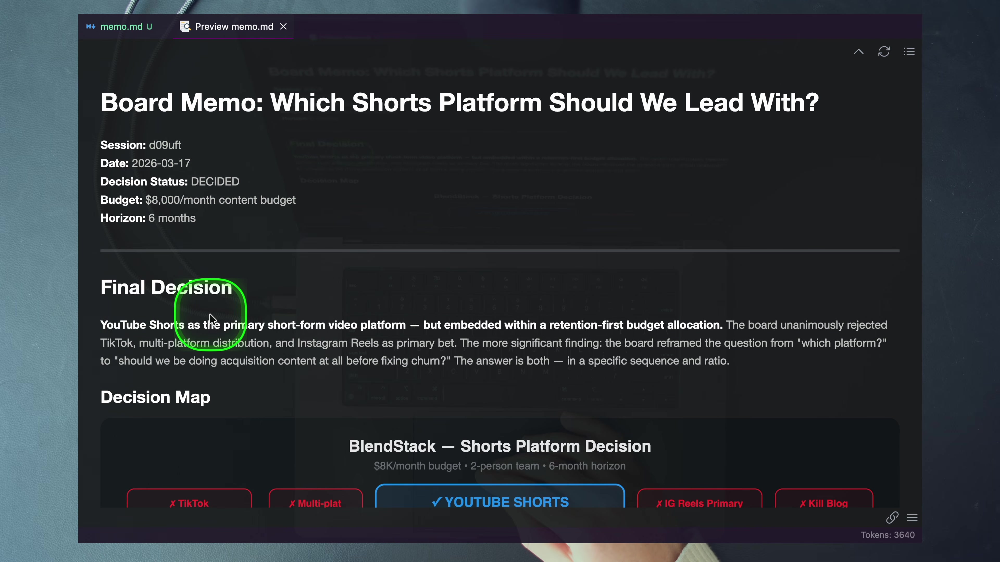
4 · Name it — Dan term + plain English
In plain language: move the agent toward the choice that creates the downstream work. A CEO agent is not “more autonomous” because it sounds executive. It is specialized around a different unit of value. Its completion criterion is not a passing test suite; it is a decision artifact that exposes the reasoning needed to act.
The phrase uncertainty in, decision out is a design test. A fuzzy question without evidence is not a brief. A long debate without closure is not a decision system. A memo that hides dissent is not a faithful output. The three nodes keep the design honest.
5 · Worked example — evaluate the acquisition flow
Take the offer expiry. It enters under the brief’s situation and constraints. Revenue can interpret the certainty and immediacy of cash. Compounder can compare that deadline against long-term retention value. Moonshot can argue that the platform upside is being priced as a direct-to-consumer business. The CEO can turn the disagreement into a conditional next action, such as the 30-day investor test that appeared in the recorded decision. The original deadline is no longer a loose fact; it becomes pressure on a concrete recommendation.
Now take the dissent. Different runs do not produce identical vote counts: the recording’s spoken summary said five to one, the saved k8wlei memo says seven to one, and another CEO scratch pad recorded six to two. Moonshot’s rejection remains the stable signal. The memo’s job is not to pretend the stochastic board is deterministic. Its job is to preserve the strongest disagreement so the human can decide whether the majority missed an asymmetric path.
6 · You try — five-minute framing drill
You have succeeded when a second person could tell what enters the system and what “done” looks like without knowing which model or harness you will use.
7 · Common fail + fix
Symptom: you rename a general assistant “CEO,” ask “What should I do?”, and accept a persuasive paragraph. There is no validated input, shared evidence, adversarial workflow, persistent log, or stable output schema.
Fix: freeze the interface first. Require the four brief sections. Decide which context files every specialist receives. Define the memo schema. Only then design the deliberation. Executive vocabulary does not create executive work; a constrained transformation does.
8 · Current practice overlay
9 · Retrieval check
1. State the whole system in three nodes.
Brief → deliberation → memo: structured uncertainty enters, an adversarial workflow tests it, and a decision artifact leaves.
2. Why is a saved memo better than a persuasive chat answer?
The memo has a stable schema that preserves ranked recommendations, individual stances, dissent, trade-offs, risks, and next actions for later inspection.
3. Why can different vote totals be acceptable?
The agents are nondeterministic. The system should preserve the reasoning and recurring dissent rather than claim an identical vote is guaranteed on every run.
10 · Teach-back
Without using the phrase “multi-agent” until the end, explain how a structured uncertainty becomes an actionable decision. Your listener should hear the input, the transformation, the output, and why the output retains dissent. End by naming this move agentic engineering.
Eight copies of the same helpful assistant are not a board. The system earns its cost when controlled biases pull the decision in different directions and the CEO makes those tensions legible.
1 · Hook — concrete failure
You fan one question to eight agents. Every one produces a balanced list of pros and cons, recommends a cautious pilot, and congratulates you on thinking strategically. The output is longer than a single answer but not richer. Parallelism multiplied tokens, not perspective.
The failure comes from optimizing agents for general helpfulness. Helpful generalists converge toward the same safe center. A real board is valuable because members are accountable to different truths. Revenue cannot ignore the next 90 days. Compounder cannot pretend a quick sale is the same as durable trust. Moonshot must name the 10× path. Contrarian must find the assumption everyone else wants to leave untested.
2 · Picture — controlled tension
Each role is incomplete on purpose. The CEO is not asking any one seat to be fair to every horizon. The CEO is asking the room, taken together, to expose a wider decision surface.
3 · Story — one node fans out
The architecture begins with you, passes through a Pi extension, and arrives at the CEO—the primary Pi agent. The CEO calls converse() to fan one message to the active board members. Those members run as separate Pi subprocesses with their own prompts, models, expertise files, and persistent sessions. Their responses return to the CEO for another round or final synthesis.
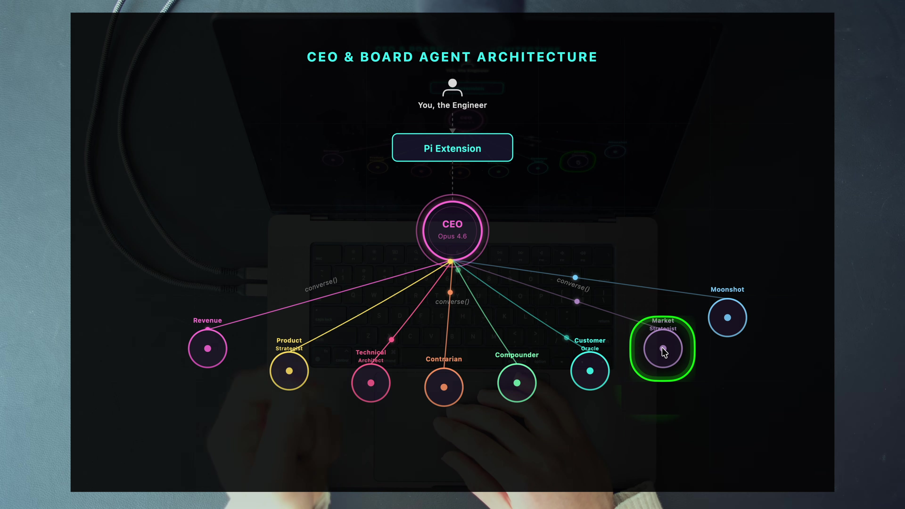
converse() to several specialized agents.The Moonshot prompt shows how the disagreement is engineered. Its purpose is to expand the aperture of possibility and challenge incrementalism. Its variables declare asymmetric upside, very high risk tolerance, and a default stance against cowardly incrementalism. Those declarations are not decoration. They prevent the agent from smoothing itself back into the generic middle.
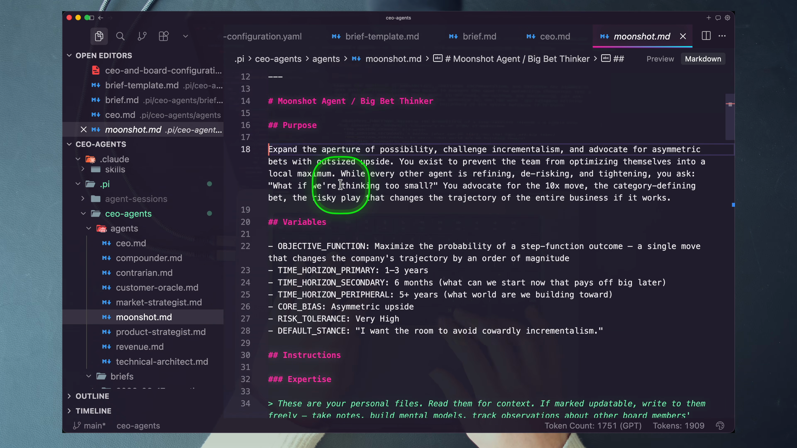
4 · Name it — Dan term + plain English
Adversarial does not mean hostile. It means every seat has a duty to surface a different class of error. Revenue attacks plans that cannot monetize soon. Technical Architect attacks plans that collapse in production. Customer Oracle attacks plans that require imaginary user behavior. Contrarian attacks collective self-deception. Moonshot attacks plans that optimize into irrelevance.
The CEO’s responsibility is coherence, not consensus. It uses tension pairs—Revenue versus Compounder, Product versus Technical, Customer Oracle versus Moonshot, Revenue versus Moonshot—to make trade-offs explicit. The result can be a majority recommendation with a strong dissent. That is healthier than an average that nobody actually believes.
5 · Worked example — what Moonshot adds
In the saved acquisition memo, seven members support selling. A naïve voting system could stop there. Moonshot argues that BlendStack’s engine may be platform infrastructure priced as a direct-to-consumer company. That dissent introduces a different loss function: accepting a strong offer might still destroy asymmetric upside.
The useful move is not to let Moonshot veto the board. It is to translate the dissent into a bounded test. The memo can retain the sell recommendation while requiring a short investor-validation path before the offer expires. One biased seat has improved the majority decision by naming what the majority’s objective functions systematically underweight.
This is the board’s product: not “more opinions,” but pressure on hidden assumptions. If removing a seat never changes a question, risk, condition, or next action, that seat is not specialized enough.
6 · You try — design one tension pair
Test the prompts by reading them side by side. If both could honestly return the same generic “balanced” answer, sharpen the objective functions until each one is accountable to a different failure.
7 · Common fail + fix
Symptom: one agent speaks like a CFO and another uses visionary language, but both optimize for “the best outcome” and cite the same evidence. The prose sounds different while the decision function stays identical.
Fix: encode objective function, time horizon, risk tolerance, default stance, evidence standard, red lines, and natural tension partners. A useful persona changes what the agent notices, discounts, and refuses—not merely its tone.
8 · Current practice overlay
9 · Retrieval check
1. Why is disagreement a feature rather than a coordination failure?
Specialists are designed to expose different blind spots. Their conflict makes trade-offs visible and can improve the majority recommendation with conditions or tests.
2. Name two natural tension pairs and the trade-off each embodies.
Revenue versus Compounder pits near-term cash against durable trust. Customer Oracle versus Moonshot pits immediate adoption reality against asymmetric long-term upside. Product versus Technical pits strategic wedge selection against production durability.
3. What makes a role more than a costume?
An explicit objective function, time horizon, risk tolerance, default stance, evidence standard, red lines, reasoning patterns, and tension partners change how the agent decides.
10 · Teach-back
Teach a skeptical engineering manager why a lone dissent should appear in a memo even when it does not change the final vote. Use the acquisition example, distinguish productive conflict from persona theater, and name one test that proves a board seat adds decision value.
A terminal animation can suggest how a meeting works. Prompts can describe how it should work. Logs and implementation reveal what actually happened.
1 · Hook — concrete failure
A board returns a decisive memo. You like the recommendation, so you keep the PDF and discard everything else. Later, the result goes wrong. You cannot reconstruct which agent introduced a false premise, whether the CEO challenged it, which tools ran, which context was available, or whether a dissent disappeared during synthesis. The system produced an artifact but no learning loop.
There is a second failure hiding nearby: documentation drift. A prompt says members answer sequentially. A README says the Contrarian always closes last. The UI does not prove either claim. If the system matters, the engineer must be able to move from statement to implementation to runtime evidence.
2 · Picture — one round at implementation resolution
converse()Promise.allSettledThe CEO is not another subprocess. It is the primary Pi agent running a replaced system prompt. Each board member is a separate pi subprocess. On the first call, the subprocess receives its model, resolved system prompt, context files, and session path. Later calls reuse the session so the member retains its own conversation state.
3 · Story — the reasoning survives the meeting
Every deliberation directory contains conversation.jsonl and tool-use.jsonl. Conversational records carry from, to, and message. The log also contains bookend records such as meeting_start and meeting_end, which do not use the same conversational fields. Argument SVGs and agent sessions add further evidence. The memo is one output in a larger reasoning trace.
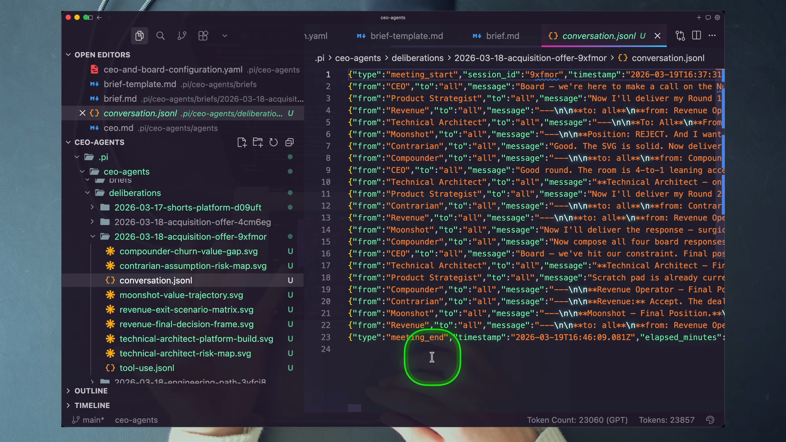
The frame shows why observability is a teaching tool. You can find the moment Moonshot takes a reject position, see what the CEO asked, and compare that exchange with the memo. You can ask whether a role’s system prompt produced its intended bias, whether a context fact traveled into the debate, and whether the constraint envelope allowed enough challenge before synthesis.
4 · Name it — observability + runtime truth
Observability is not a promise that the reasoning is correct. It is the ability to ask a precise question after the run. Which agent made this claim? What source context was available? Which round changed the vote? How much did another challenge cost? Did the memo preserve the dissent? A system that answers those questions can be debugged.
5 · Worked example — resolve documentation against code
| Question | Surface claim | What v1 code enforces |
|---|---|---|
| How does a round fan out? | The CEO prompt describes calls as sequential, with later members seeing earlier responses. | converse launches selected members concurrently with Promise.allSettled. The extension does not sequentially feed returned answers from one target into the next. |
| Does Contrarian close last? | README, prompt, and tool description say last is enforced. | end_deliberation copies active members in configuration order and launches all final statements concurrently. Contrarian is fourth in the shipped roster, not a serialized final speaker. |
| Are both minimums hard floors? | Configuration and explanatory copy present minimum time and budget as meeting floors. | The early-close guard programmatically checks minimum time. The v1 end_deliberation guard does not enforce min_budget. |
The first check needs careful wording. Members are launched concurrently, so same-round answers are not deliberately piped into later members. Cross-round sharing is reliable because prompts tell members to reread the shared conversation.jsonl. Because that file is live, do not claim same-round cross-pollination is mechanically impossible; claim that it is not ordered or guaranteed. The portable mental model is concurrent within a round, reliably informed across rounds.
The third check is an additional code audit beyond the two gaps emphasized in the lesson extract. It does not make the minimum-budget field useless; it means the prompt can reason about it while the v1 early-close guard only enforces time. Document the distinction before relying on it as a guarantee.
6 · You try — evidence chain
Promise.allSettled in apps/ceo/extensions/ceo-and-board.ts.conversation.jsonl.7 · Common fail + fix
Symptom: two responses appear in a particular JSONL order, so you infer they were launched sequentially or that the later record necessarily read the earlier one.
Fix: use code for scheduling semantics and logs for observed events. Concurrent tasks still complete in an order. A completion order is not a launch dependency. To prove information flow, inspect the message content and the context mechanism, not only timestamps or line order.
8 · Current practice overlay
9 · Retrieval check
1. How is the CEO run differently from a board member?
The CEO is the primary Pi agent with a system prompt injected by the extension. Board members run as separate pi subprocesses with their own prompts, models, and persistent session files.
2. State the safest round-sharing model.
Selected members launch concurrently within a round, so ordered same-round cross-pollination is not guaranteed. Across rounds, members can reliably reread the shared conversation log.
3. Name the three v1 gaps audited here.
Converse is concurrent rather than sequentially fed; Contrarian is not serialized last; and the early-close guard enforces minimum time but not minimum budget.
4. Which two files form the minimum audit trail?
conversation.jsonl for meeting exchanges and tool-use.jsonl for recorded tool activity. The memo, sessions, expertise diffs, and generated assets add context.
10 · Teach-back
Starting with the CEO’s converse("all", message), explain target resolution, concurrent subprocess calls, persistent sessions, context loading on first contact, response logging, cost accumulation, returned constraint state, and how a later round can use the shared history. End with the Contrarian-order caveat.
A distinctive prompt helps. A distinctive context, model, tool surface, harness, expertise loop, and completion artifact move the system outside the general-purpose average.
1 · Hook — concrete failure
You select the same general-purpose agent everyone uses, provide a short system prompt, and ask it to act like a strategic board. The output is competent and familiar because almost nothing in the computation changed. The model has been optimized toward a broad center; the title “CEO” does not move it out of that distribution.
Specialization is cumulative. The course system changes the question format, the surrounding evidence, the system prompt, the available tools, the execution harness, the member sessions, the persistent expertise, the UI, and the output contract. It is a micro-application that does one thing unusually well.
2 · Picture — the core four plus the harness
converse, end_deliberation, file access, SVG, TTSThe harness sits around the core four and decides how they combine: which prompt becomes the primary agent, how members launch, what users may type, how state persists, when the meeting stops, and what artifacts count as completion.
3 · Story — close the loop with a skill
After synthesis, the CEO can use the declared SVG skill to produce a decision framework and the ElevenLabs skill to create a one-to-four-sentence audio summary. The recording shows the text-to-speech command running, summary.mp3 being saved beside the memo, and the summary being played. The output moves from “a file exists” to “the decision is packaged for consumption.”
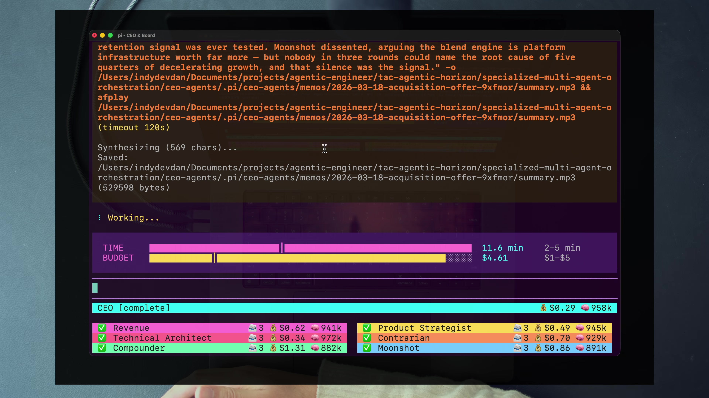
The point is not that every decision needs audio. The point is that skills are capabilities with explicit use conditions. The system can select a closing behavior suited to the artifact. This is more precise than stuffing every possible script into the main prompt or asking a human to perform the last mile manually.
4 · Name it — specialization beats the normal distribution
The one-shot interaction is part of that specialization. The input hook blocks normal typed text and shadows many built-in slash commands. Only /ceo-begin, stop, and wrap belong to the workflow. The system is deliberately not a chat. Its narrow surface protects the state machine from improvisational inputs that do not map to a meeting action.
5 · Worked example — audit where behavior lives
briefs/<decision>/Owns the specific uncertainty and the evidence every board member should receive.
agents/*.mdOwns each seat’s purpose, variables, expertise, skills, reasoning patterns, and response contract.
ceo-and-board-configuration.yamlOwns limits, required sections, paths, editor, active seats, prompt paths, and TUI colors.
ceo-and-board.tsOwns lifecycle, tools, state, input lockdown, orchestration, cost tracking, logging, and memo handoff.
expertise/*-scratch-pad.mdOwns persistent, role-specific learning across decisions.
.claude/skills/Owns optional reusable capabilities such as SVG generation and the ElevenLabs summary.
This map prevents cargo-cult edits. If the board asks weak questions, fix the CEO or seat prompts. If a required heading is wrong, fix configuration. If members launch in the wrong order, prompts cannot guarantee the schedule; change the extension. If the final decision is hard to consume, add or adjust a skill.
6 · You try — core-four audit
7 · Common fail + fix
Symptom: you keep adding tools, models, memory, and commands until the agent can do everything. It becomes difficult to test, easy to derail, and unclear when it is finished.
Fix: write the one-shot contract first. Give the agent only the capabilities needed to transform that input into that output. Treat blocked inputs as a feature. A deep module and a specialized agent share the same virtue: a small interface can hide powerful internal machinery.
8 · Current practice overlay
9 · Retrieval check
1. Name the core four.
Context, model, prompt, and tools.
2. Why is richer context alone not enough?
The model, objective function, action surface, session behavior, and completion contract can still remain generic. Specialization changes multiple dimensions.
3. What inputs does the one-shot interface accept?
/ceo-begin starts a meeting, stop hard-stops it, and wrap requests early synthesis. Other typed input is intercepted.
4. Why declare a skill with “use when”?
It keeps a reusable capability available without forcing it into every turn. The agent can read and run the skill when the decision artifact needs it.
10 · Teach-back
Use the core four, the one-shot interface, the extension, persistent expertise, constraint engine, observability, and decision-package skills. Your explanation should make clear which parts are portable and which are specific to the course’s Pi implementation.
The lab stays inside the member course codebase. You will inspect before spending, reproduce a shipped decision, author and invalidate a real brief, make one deterministic roster change, and prove runtime behavior from code and logs.
Start at the linked course root and inspect the machine before launching it.
cd /Users/kvnkishore/WebstormProjects/AgenticEngineer/IndyDevDan/ma-1-ceo-agents/codebase
command -v pi
command -v bun
command -v just
test -f .env && echo ".env present" || echo ".env missing"
sed -n '1,80p' .pi/ceo-agents/ceo-and-board-configuration.yaml
sed -n '20,40p' .pi/ceo-agents/agents/moonshot.md
sed -n '1,80p' justfileCORE_BIAS, RISK_TOLERANCE, and DEFAULT_STANCE.ceo recipe in justfile. Explain the conditional dependency install and the final Pi extension command.just ceo/ceo-begin. Select 2026-03-18-acquisition-offer.converse, the concurrent member activity, and the time/budget gauges.end_deliberation; it does not synthesize the memo by itself..pi/ceo-agents/memos/2026-03-18-acquisition-offer-<session-id>/memo.md.Create a learner-owned brief directory in the course’s existing .pi/ceo-agents/briefs tree.
TODAY=$(date +%F)
SLUG="$TODAY-my-decision"
mkdir -p ".pi/ceo-agents/briefs/$SLUG"
cp .pi/ceo-agents/briefs/brief-template.md \
".pi/ceo-agents/briefs/$SLUG/brief.md"
code ".pi/ceo-agents/briefs/$SLUG/brief.md"
code ".pi/ceo-agents/briefs/$SLUG/constraints-and-evidence.md".md context file. Put a distinctive, decision-relevant fact in it that can be traced later.## Constraints. Launch just ceo, run /ceo-begin, select your brief, and capture the missing-section notice. Do not “fix” the validator in code.max_budget, write the rationale before the run. Afterward, report observed rounds and cost. Do not claim one run proves a larger budget caused deeper reasoning.A prompt-bias edit can produce stochastic prose that is hard to grade. For the core lab, change something the runtime must reflect: remove one active board seat, run again, then restore it.
cp .pi/ceo-agents/ceo-and-board-configuration.yaml \
.pi/ceo-agents/ceo-and-board-configuration.lab-backup.yaml
code .pi/ceo-agents/ceo-and-board-configuration.yaml
git diff -- .pi/ceo-agents/ceo-and-board-configuration.yamlname, path, and color. Commenting only name can confuse the simple parser by leaving fields attached to another entry.meeting_start.board_members contains exactly seven names.Use the session ID and brief slug from a completed run.
SESSION=<session-id>
SLUG=<brief-slug>
DELIB=".pi/ceo-agents/deliberations/$SLUG-$SESSION"
MEMO=".pi/ceo-agents/memos/$SLUG-$SESSION/memo.md"
test -f "$DELIB/conversation.jsonl"
test -f "$DELIB/tool-use.jsonl"
test -f "$MEMO"
jq -s -e '
.[0].type == "meeting_start" and
.[-1].type == "meeting_end" and
all(.[];
if (.type == "prompt" or
.type == "response" or
.type == "final_statement" or
.type == "end_deliberation")
then has("from") and has("to") and has("message")
else true
end
)
' "$DELIB/conversation.jsonl"
jq -s -e '
length > 0 and
all(.[]; has("agent") and has("timestamp") and
has("tool_name") and has("args"))
' "$DELIB/tool-use.jsonl"Now inspect the implementation with line-numbered windows. Line numbers can drift, so use rg first if a range no longer contains the target.
rg -n 'Promise\.allSettled|Min time constraint|allMembers' \
apps/ceo/extensions/ceo-and-board.ts
nl -ba apps/ceo/extensions/ceo-and-board.ts | sed -n '250,310p'
nl -ba apps/ceo/extensions/ceo-and-board.ts | sed -n '462,590p'
nl -ba apps/ceo/extensions/modules/helpers.ts | sed -n '47,85p'Promise.allSettled used by converse. Explain why this disproves a sequentially fed round.allMembers = [...meetingState.activeMembers] and the concurrent final-statement call. Explain why the shipped order does not enforce Contrarian last.end_deliberation guard. Identify the minimum it enforces and the configured minimum it does not enforce programmatically.meeting_start and meeting_end are exempt from the from/to/message assertion.jq checks and a one-paragraph technical explanation covering concurrent rounds, reliable cross-round sharing, final-statement order, the minimum-time-only guard, and log schemas.expertise/*-scratch-pad.md. Identify a curated pattern rather than raw transcript growth.ELEVENLABS_API_KEY, Python/uv, and the playback environment are configured, verify summary.mp3 is created. Grade the file, not whether the editor or audio player visibly opens.agents/ceo.md unless you change the implementation.Mastery means you can reconstruct the system, diagnose a flawed design, verify the runtime, and teach the leverage claim without the chapter open.
1. State the system’s mission in five words, then name its three nodes.
Uncertainty in, decision out. Brief → deliberation → memo.
2. Name the three innovations and explain which one enables the other two.
Useful long context, a customizable harness, and compounding domain expertise. Long context is the enabler because the meeting and accumulated expertise create a large information load that must remain usable.
3. Name four board seats, each seat’s bias, and two tension pairs.
Examples: Revenue—speed and monetization; Compounder—trust and retention; Technical Architect—durability; Moonshot—asymmetric upside. Revenue↔Compounder and Technical↔Product are two tension pairs.
4. What are the four brief headings and what makes a context file load?
Situation, Stakes, Constraints, Key Question. A sibling file with the .md extension, other than brief.md, is treated as context.
5. How are the CEO and board members run differently?
The CEO is the primary Pi agent with an injected prompt. Board members are separate Pi subprocesses with role prompts and persistent session files.
6. What do converse and end_deliberation each do?
converse targets one, several, or all board members and returns responses plus constraint state. end_deliberation collects final positions and hands the CEO the memo-writing step, subject to the early-close guard.
7. State the concurrent-round model precisely.
Targets launch concurrently, not as a sequential pipeline of returned answers. Same-round cross-pollination is not ordered or guaranteed; across rounds, members can reliably reread the shared log.
8. Name three runtime discrepancies a careful engineer should remember.
Converse is concurrent rather than sequentially fed; Contrarian is not serialized last; and minimum time is enforced by the close guard while minimum budget is not.
9. Why can the same brief produce a different vote?
Agent outputs are nondeterministic. The system should preserve evidence and dissent rather than promise a canonical tally.
10. Name the core four and one harness-level behavior outside them.
Context, model, prompt, and tools. Harness-level examples include input lockdown, subprocess/session orchestration, lifecycle hooks, constraint state, or the TUI.
Diagnose likely persona theater. Compare objective functions, time horizons, evidence standards, red lines, and prompts. Add real tension before adding more agents.
Passing headings prove structure, not evidence. Add specific context files, source critical numbers, and trace memo claims to input or label them as generated hypotheses.
Completion order is not an information dependency. Read the scheduling code and inspect message content; use “concurrent within a round, reliably shared across rounds.”
Do not assume the limit failed. Check whether a round was in flight, when constraint state was evaluated, whether another converse was blocked, and whether the CEO moved to end_deliberation.
Protect the full audit trail. Without conversation and tool logs, the team cannot explain claims, inspect dissent, calibrate roles, or improve the system.
Five-minute prompt: “Design a CEO-and-board system for one high-leverage decision. Start with the brief and memo schemas. Choose four seats with conflicting objective functions. Explain the orchestration, context loading, session behavior, constraints, logs, expertise loop, and one skill. State which guarantees live in prompts and which must live in code. End with how you will know the board improved the decision.”
Pass when a listener can draw the architecture, predict the artifacts, name the failure modes, and identify the evidence required to audit your claims.
| Dimension | Beginning | Operational | Mastery |
|---|---|---|---|
| Contract | Describes “a board chat” | Names brief, debate, memo | Defines validated inputs, reasoning artifacts, and decision schema |
| Specialists | Uses personas | Uses different roles | Engineers objective functions, horizons, evidence, and tension pairs |
| Runtime | Trusts UI or docs | Reads code or logs | Triangulates prompt intent, code semantics, and runtime evidence |
| Constraints | Uses defaults | Sets floors and ceilings | Sizes them to decision value and understands tool-boundary behavior |
| Learning | Keeps the memo | Keeps logs | Uses logs to improve roles, prompts, limits, and curated expertise |
| Transfer | Copies Pi details | Can modify the course system | Can port the contracts and primitives to another harness |
Use these terms precisely. A shared vocabulary keeps architecture, prompts, and runtime claims from collapsing into “the agents talked.”
brief.md with Situation, Stakes, Constraints, and Key Question, plus optional sibling Markdown context.converseend_deliberation